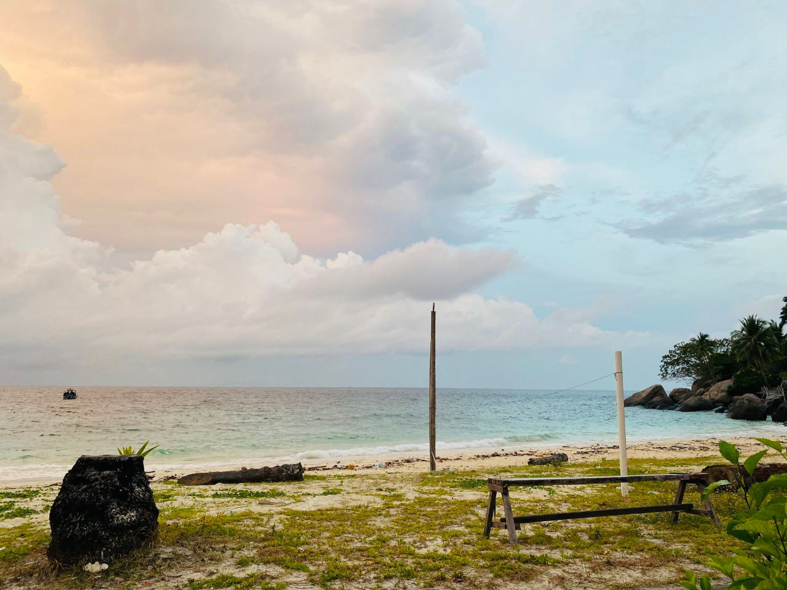
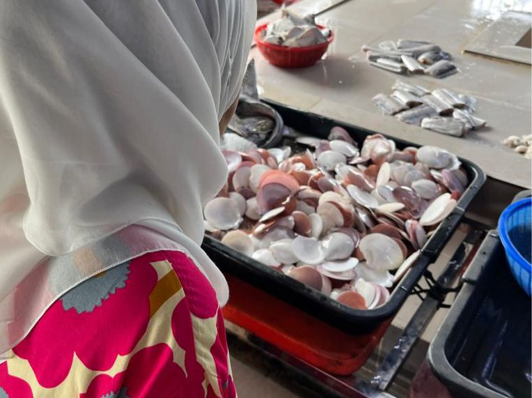

🌴 Beaches & Islands
Mersing is famous for its calm beaches and beautiful islands like Pulau Rawa and Pulau Aur. It's the perfect getaway for locals and tourists.

🛒 Local Market Life
Every morning, the market comes alive with fresh seafood, fruits, and friendly vendors. I love accompanying my mom here every week.
🏡 Kampung Vibes
My kampung in Mersing is filled with beautiful memories of childhood — playing with cousins, enjoying traditional food, and feeling nature all around.